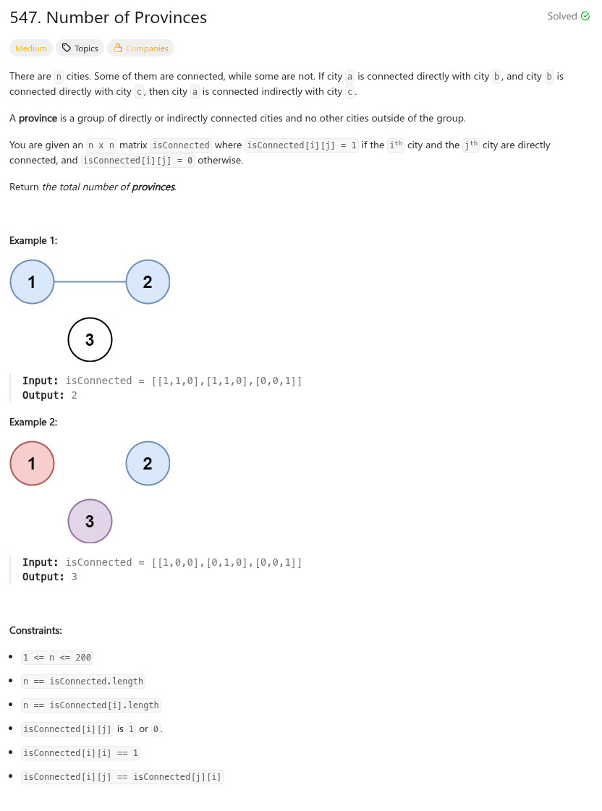

參考資訊：
https://blog.csdn.net/navicheung/article/details/135835250
題目：

#define MAX_LEN 200
void travel(int **isConnected, int *size, int cur, int *q)
{
int c0 = 0;
q[cur] = 1;
for (c0 = 0; c0 < size[cur]; c0++) {
if (isConnected[cur][c0] && (q[c0] == 0)) {
travel(isConnected, size, c0, q);
}
}
}
int findCircleNum(int **isConnected, int isConnectedSize, int *isConnectedColSize)
{
int r = 0;
int c0 = 0;
int q[MAX_LEN] = { 0 };
for (c0 = 0; c0 < isConnectedSize; c0++) {
if (q[c0] == 0) {
r += 1;
travel(isConnected, isConnectedColSize, c0, q);
}
}
return r;
}